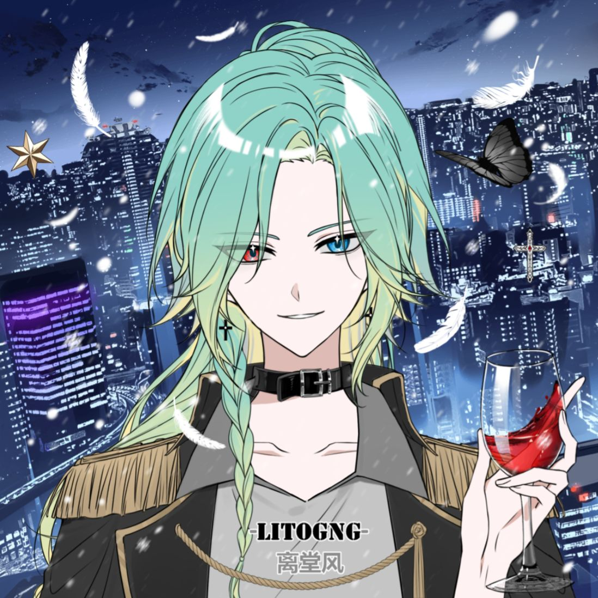
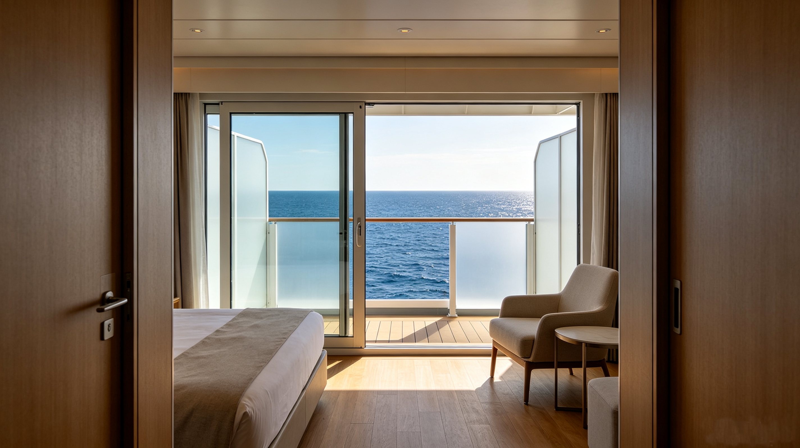

意外？谋杀？熊探带你起底风来水榭死亡事件！
最近这两天，“小季总死亡事件”已经在网上传得沸沸扬扬。官方尚未发布调查结果，而网络舆论更是众说纷纭。目前，“谋杀致死”虽然在声量上远大于“意外死亡”派，但到底没有站得住脚的证据。那么真相到底如何呢？难道“谋杀”只是看客们的臆测吗？
了解熊探的朋友都知道，熊探已经联系上了现场的朋友，掌握了第一手资料，而且已经围绕相关信息做出了推理。我们不卖关子直入正题，熊探的结论是——
季清越是被人谋杀的。凶手就是他的未婚妻宋令仪。
看官朋友们可能在想：真的吗？你为什么这么说？至于熊探是不是胡说八道，相信看了下面的推理过程，真假自会见分晓。
首先要介绍一下“小季总死亡事件”或者“风来水榭死亡事件”的事件经过。众所周知，小季总季清越是阅辉掌门人季振邦的独子，最近因为搞网络直播而声名鹊起，关注者无数。7月9日，因阅辉集团、鼎峰集团联姻，两家在“艾希皇后号”上包场举行订婚宴。登船者都是接到邀请的宾客，本身就缩小了嫌疑人的范围。季清越在中午的订婚宴散场后，一直在一楼休闲大厅消遣，直到19:25分起身离开，去二楼宴会厅参加当晚20:00开始的红酒品鉴会。20:05，季清越的尸体在宴会厅被另一位来参加红酒品鉴会的宾客发现，死亡时间为半小时以内。

（图为季清越直播截图）季清越当天直到从休闲大厅起身、去参加红酒品鉴会前，都有人目击，结合现场堪检初步推断死亡时间在半小时到一小时之间，可以判断，死亡事件必然发生在19:30到20:05之间。
宴会厅在中午订婚宴结束后，就被封闭起来用于打扫收拾，直到酒会前四十分钟才开放。而季清越嗜好红酒，对于酒会，有提前到场半小时的习惯。可以确定，季清越到达酒会时，宴会厅才刚刚开放。19:30后，船只经过礁石带，发生颠簸，旅客大多留在原地没有移动。宴会厅附近的一位工作人员作证，去往宴会厅，必须经过一条长廊，而在季清越和第一发现者之间，无人通过长廊。那么凶手只能是在季清越来到宴会厅前就提前躲藏在里面——否则，凶手只能是隐形人。
该工作人员还作证，季清越经过前，她看到一位女性经过长廊。从面容和衣着上判断，那人正是订婚宴的女主角——宋令仪。宋令仪19:00时从美食厅离开，她声称自己回房休息，之后一直没出过门，但因为无法证明，等于她没有不在场证明。而且，普通宾客无法进入被封锁的宴会厅，而宋令仪曾因为准备订婚宴，在7月9日之前，多次出入过宴会厅。她完全可以提前准备好钥匙，在保洁员离场并锁好门后，用自己的钥匙打开无人的宴会厅并潜伏其中，等工作人员为大门开锁、季清越提前来到无闲杂人员的宴会厅后，趁其不备杀死季清越，然后通过连接客房处楼梯的后门，快速回到自己房间。
当日上午，季清越曾运送一柜红酒上船。案发时，季清越就倒在倒塌的红酒柜旁，凶器正是一瓶定制红酒，瓶身上带有此次订婚宴的装饰。定制红酒共有两瓶，分别放在这对未婚夫妻的房间。宋令仪房间的定制红酒却不翼而飞。问及这个问题，她只说自己不慎打碎了酒瓶。但详细追问，她却支支吾吾，说不清楚。可见，她正是将自己房中的定制红酒用作打死季清越的凶器，才会无法说明。

（图为宋令仪房间）宋令仪房间中，还发现一支尚未使用的麻醉剂。宋令仪对此解释是害怕自己晚上失眠。但如果是为了助眠，一般人会选择吃安眠药，而不是使用针剂。熊探在此怀疑，这是宋令仪的planB。如果在宴会厅的谋杀没有起效，她会伺机药倒季清越后再行谋杀。
熊探可以断言：此案已破。接下来，只需等待宋令仪被抓捕归案的消息，就能证明熊探的正确。
好了，世间奇案多，真假熊探说。各位看官，我们下次再见。